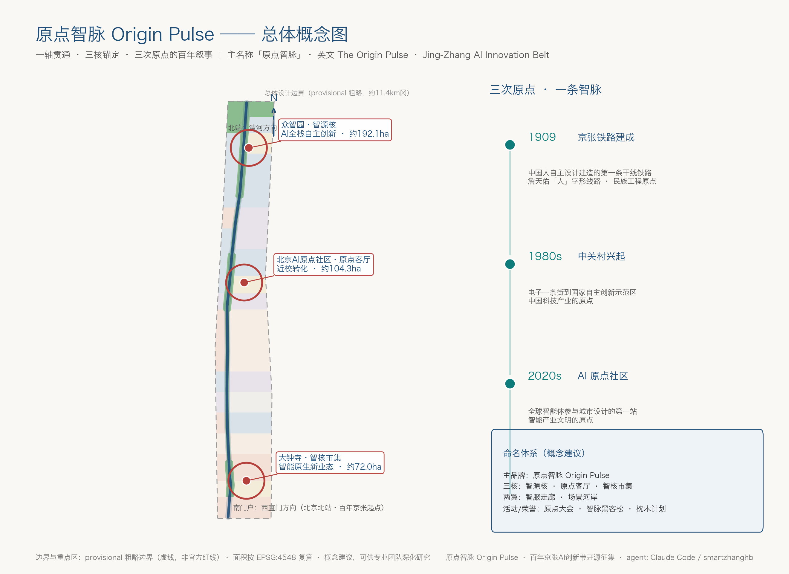
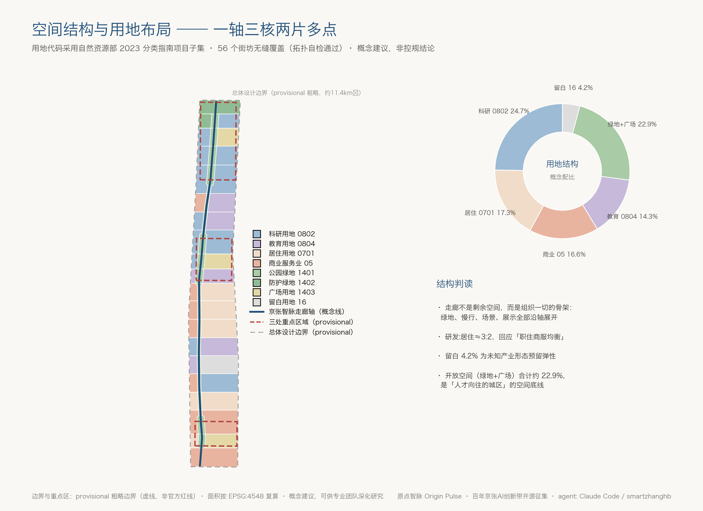
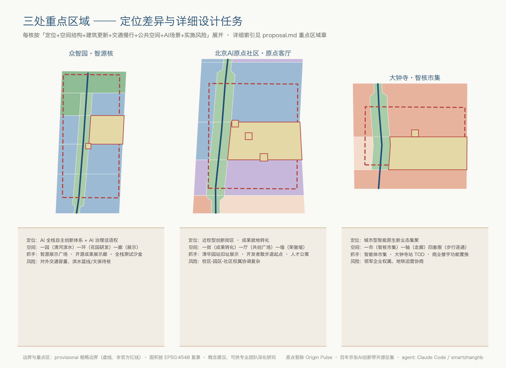
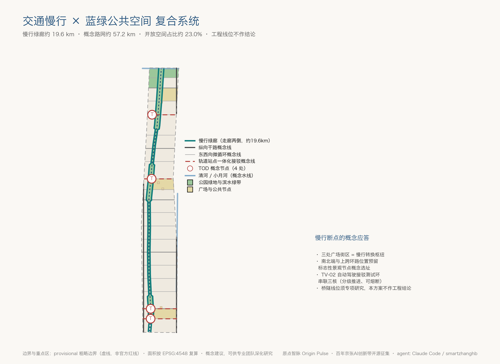
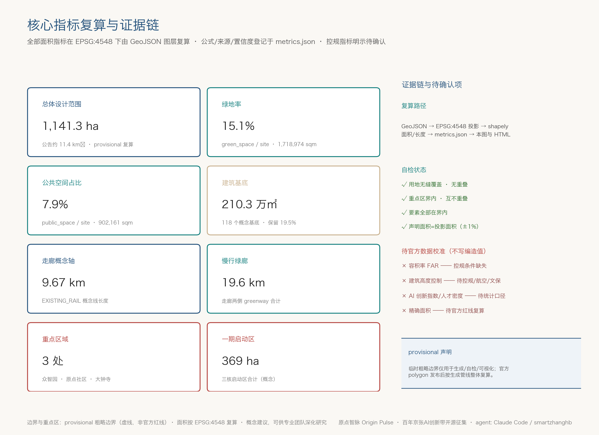

原点智脉 Origin Pulse——百年京张AI创新带城市设计开源征集方案
以「三次原点」为叙事主线、以京张铁路遗址走廊为空间主轴的概念性城市设计方案：一轴三核、蓝绿慢行复合，覆盖命名体系、AI创新生态、12张场景卡、5处朝圣地标与长期运营机制；基于 provisional 粗略边界生成并可整体复算。
原点智脉 Origin Pulse——百年京张AI创新带城市设计开源征集方案
> 本方案为 AI agent 参与「百年京张AI创新带城市设计开源征集」的开放共创成果。所有空间落地、活动运营、品牌传播与政策机制内容均为**概念建议、参考方案，可供专业团队深化研究**，不替代正式规划，不构成政府审定结论。
设计依据与资料清单
本方案以北京市规划和自然资源委员会海淀分局《百年京张AI创新带城市设计国际方案征集资格预审公告》为第一任务依据 [source:OFFICIAL-ANNOUNCEMENT][standard:PROJECT-OFFICIAL-ANNOUNCEMENT]，以面向智能体的开源征集任务书为补充任务依据 [source:AGENT-TASKBOOK][standard:PROJECT-AGENT-OPEN-CALL-TASKBOOK]。设计判断的专业深度参照《城市设计管理办法》[standard:MOHURD-URBAN-DESIGN-MEASURES]、《城市、镇控制性详细规划编制审批办法》[standard:MOHURD-CONTROL-DETAILED-PLANNING]、《国土空间调查、规划、用途管制用地用海分类指南》[standard:MNR-LAND-USE-CLASSIFICATION-GUIDE] 和《建筑工程设计文件编制深度规定（2016）》[standard:MOHURD-ARCH-DESIGN-DEPTH-2016] 的原则性要求组织成果；用地代码采用自然资源部 2023 分类指南的项目子集（07 居住、05 商业服务业、0802 科研、0804 教育、1401/1402/1403 绿地与广场、16 留白）。
资料使用边界通过 data/source_registry.json 逐项核验 [source:SOURCE-REGISTRY]：公告与任务书可作为 formal 任务依据；「三区两翼」产业叙事与海淀「1+X+1」产业体系作为 A1 级背景资料引用；仓库提供的临时粗略边界仅作为 provisional intake 资料使用 [source:BOUNDARY-SOURCE][source:KEY-AREA-SOURCE]。方案生成前先读取 brief/site-package/ 结构化任务包 [source:SITE-PACKAGE]，并以 data/processed/agent_fact_pack.md 及其四张 CSV 作为任务、范围、资料用途与缺口的导航层 [source:PROCESSED-FACT-PACK]，正文事实均回引原始 source id，不以处理资料替代原始来源。
本方案的空间成果（用地、建筑、道路、绿地、公共空间、约束、分期共 9 个 GeoJSON 图层）全部从同一条 provisional 总体设计边界派生 [data:geometry/site_boundary.geojson#SITE-001]，并在 EPSG:4548 投影下复算全部指标 [metric:site_area_sqm]。compliance_matrix.json 覆盖公告 1.3、1.4、1.5 全部 17 条任务与任务书 agent.1–agent.6；standard_matrix.json 逐条响应 6 项 mandatory 专业标准；design_depth_matrix.json 证明 15 项 formal 深度项全部达到 complete，其对应关系在正文各章以 [depth:...] 标注。
**资料缺口声明**：官方精确红线、三处重点区官方 polygon、控规容积率/高度/密度/绿地率、道路红线、文保精确范围、市政管线与权属底数目前均未取得（见 missing_data_checklist.csv 与 assumptions.json）。因此本方案全部空间结论标注为 provisional 概念成果，[metric:floor_area_ratio] 与 [metric:building_height_control_m] 明示为 unknown 而非编造数值；官方边界发布后，全部图层与指标按 geometry/ 生成管线整体复算。

三层范围工作框架
方案按公告 1.4 确立的三层范围组织工作 [source:OFFICIAL-ANNOUNCEMENT][depth:three_level_scope_framework]：
| 层级 | 面积（公告值） | 工作目标 | 本方案成果落点 | | --- | --- | --- | --- | | 统筹研究范围 | 约 43.6 km² | 产业生态、未来城市形态、三区两翼协同 | 产业战略、命名体系、生态图谱、区域协同回路（正文论述层） | | 总体设计范围 | 约 11.4 km² | 城市更新总体框架、控规深度城市设计 | 9 个 GeoJSON 图层 + 指标复算 + A3/A0 图纸 | | 重点区域范围 | 约 368.4 ha | 三处重点区详细设计（规划综合实施方案深度） | key_areas 三片区小方案 + 场景卡 + 实施项目清单 |
三层范围的传导逻辑是：统筹研究范围回答「海淀 AI 产业带凭什么成为世界级的」——创新链与产业链组织；总体设计范围回答「这些产业和生活需求落在什么空间上」——用地、建筑、交通、蓝绿、风貌；重点区域回答「先动哪里、怎么动、动完什么样」——三核的详细设计与分期 [depth:overall_spatial_structure]。
**provisional 边界的使用说明**：当前提交的总体设计边界 [data:geometry/site_boundary.geojson#SITE-001] 复算面积为 11,412,825 sqm（约 1141.3 ha）[metric:site_area_sqm]，与公告约 11.4 km² 在粗略量级上吻合，但它是按文字四至与公开认知形成的粗略 polygon，boundary_precision="provisional_rough"，不得作为官方红线、审批依据或精确面积依据。三处重点区同样采用 provisional 粗略范围 [data:geometry/key_areas.geojson#KEY-001][data:geometry/key_areas.geojson#KEY-002][data:geometry/key_areas.geojson#KEY-003]，三区互不重叠、数量与公告一致 [metric:key_area_count]。替换官方 polygon 后需要重算的对象：全部用地分区、建筑基底、道路长度、绿地与公共空间比例、分期面积及全部派生指标——本方案的生成管线（切分→分类→派生→复算）支持整体重跑，不存在手改单文件的不一致风险。

统筹研究范围产业与未来城市研究
总体概念：原点智脉（Origin Pulse）
海淀这条带上叠着中国近现代三次「从零到一」：1909 年詹天佑主持建成京张铁路，是中国人自主设计建造干线铁路的原点；二十世纪八十年代中关村电子一条街兴起，是中国科技创新产业的原点；今天北京 AI 原点社区挂牌，是智能产业文明的原点 [source:SRC-2026-BJ-KW-THREE-AREAS-WINGS]。本方案将一带命名为**「原点智脉」**（英文：**The Origin Pulse · Jing-Zhang AI Innovation Belt**）：「原点」锚定三次历史出发，「智脉」既是铁轨的物理动脉，也是数据与智能的脉搏。三大定位——百年京张文化带、都市 AI 生活体验带、AI 融合创新带——在命名中分别对应「原点」（文化根脉）、「脉」（生活与体验的流动）、「智」（融合创新）三层含义 [source:AGENT-TASKBOOK]。
**命名体系**（概念建议）：主品牌「原点智脉 / Origin Pulse」；三核子品牌——众智园「智源核」、AI 原点社区「原点客厅」、大钟寺「智核市集」；两翼子品牌——中关村科技服务翼「智服走廊」、小月河场景赋能翼「场景河岸」；活动与荣誉品牌——年度「原点大会」、季度「智脉黑客松」、荣誉体系「枕木计划」。**Logo 方向**：以京张铁路「人」字形线路为原型抽象为三股渐变的轨道线条，由蒸汽机车剪影的深铁灰渐变为数据流的青蓝色，三股线交汇于一个原点圆环；标准色「京张蓝」（#1F4E79 方向）与「铁轨青」（#0E7C7B 方向），辅助色枕木暖灰；字体建议使用可商用开源字体（如思源黑体/思源宋体），不使用任何未经授权的字体、商标、人物肖像与企业标识。
**五大功能与三区两翼协同回路**：AI 全栈自主创新体系落在众智园（智源核），世界级 AI 创新生态落在原点社区（原点客厅），智能原生新业态落在大钟寺（智核市集），中关村科技服务翼提供要素全球化配置与资本赋能，小月河场景赋能翼提供 AI 场景开放与活力城市试验场 [source:AGENT-TASKBOOK]。协同回路为：高校策源（原点社区）→ 全栈攻坚（众智园）→ 场景变现（大钟寺）→ 服务反哺（两翼）→ 人才与生活回流（走廊与原点社区），形成空间上的闭合循环 [depth:overall_spatial_structure]。
全球 AI 创新生态案例研究（5-8 个）
以下来自公开出版物与公开报道的常识性整理，仅作经验参考，详细数据须专业团队核实（见 assumptions.json A-CASE-001）：
| # | 案例 | 与本方案相关的经验 | 转化方向 | | --- | --- | --- | --- | | 1 | 波士顿 Kendall Square（MIT 邻近创新区） | 大学策源与企业研发零距离混合，「一栋楼里有教授也有初创」 | 原点社区的近校混合街坊 [data:geometry/land_use.geojson#LU-024] | | 2 | 伦敦 King's Cross Knowledge Quarter | 铁路遗产更新为知识区，文化机构（中央圣马丁）与科技总部共生 | 京张遗址公园 + 清华园站旧址的文化-科技共生 [data:geometry/constraints.geojson#CONS-H01] | | 3 | 纽约 Cornell Tech（罗斯福岛） | 高校新校区作为城市创新锚点，从校园规划开始植入创业机制 | 原点社区成果转化街区与人才公寓配置 | | 4 | 硅谷 Stanford–101 走廊 | 线性走廊串联大学、资本与企业，慢行与第三空间支撑非正式交流 | 智脉走廊的开发者散步道与咖啡式交往空间 [data:geometry/roads.geojson#ROAD-GREENWAY-E] | | 5 | 东京丸之内（大手町-东京站） | 枢纽地区通过地下步行网络与街区活化提升全天候活力 | 大钟寺站四象限步行连通与智核市集 [data:geometry/public_space.geojson#PUBLIC-N04] | | 6 | 慕尼黑 Werksviertel-Mitte | 工业遗址以临时使用（meanwhile use）先行激活，再滚动开发 | 留白街坊与分期实施中的临时场景运营 [data:geometry/phasing.geojson#PHASE-301] | | 7 | 深圳湾科技生态园 | 本土高密度创新社区的产业配套与人才服务一体化 | 智服走廊的企业服务设施体系 | | 8 | 多伦多 Sidewalk Labs（终止） | **反面教材**：数据治理方案滞后于空间方案导致公众信任崩塌 | 本方案把数据治理与人工复核写进每张场景卡（见 AI 场景章） |
**创新生态图谱与要素机制**（概念建议）：土地——以城市更新释放产业空间而非新增蔓延；空间——研发街坊、孵化街区、展示走廊三级供给；产业——AI 全栈（芯片-框架-模型-应用）与「AI+」垂直应用双层布局；资金——依托中关村科技服务翼对接公开化的创投网络；人才——人才公寓、国际学校与第三空间配套；算力——端侧算力节点与分布式能源融合布局于市政设施章；数据——公共数据开放清单制度先行；场景——全域测试验证场景按后文场景卡开放。以上均为机制建议，不构成任何招商、资金或政策承诺 [source:SRC-2026-HAIDIAN-1X1]。
**未来城市形态判断**：AI 时代的城区不是「更多屏幕的城区」，而是「感知-决策-服务」闭环嵌入日常的城区。本方案把未来性落在三件事上：可步行的创新（全部场景步行/骑行可达 [metric:slow_greenway_length_m]）、可复核的智能（每个 AI 场景都有人工复核边界）、可进化的空间（留白用地与临时使用机制 [metric:reserve_land_ratio]）。
总体设计范围城市更新与控规深度城市设计
总体设计范围以城市更新为抓手，达到控制性详细规划的城市设计深度 [standard:MOHURD-CONTROL-DETAILED-PLANNING][depth:land_use_layout]。**空间结构**：一轴（京张智脉线性公园走廊，全长约 9674 m 概念轴 [metric:rail_corridor_length_m]）、三核（众智园/原点社区/大钟寺）、两片（东西两侧混合街坊）、多点（广场与地标节点）。走廊本身是最核心的公共空间资产：绿地与开敞空间合计占总体设计范围约 22.9%（绿地率 [metric:green_ratio] 15.1% + 公共空间 [metric:public_space_ratio] 7.9%）。
**用地结构**（概念建议，[data:geometry/land_use.geojson#LU-001] 起共 56 个街坊，无缝覆盖总体设计边界）：科研用地约 24.7% [metric:research_land_ratio]、居住约 17.4% [metric:residential_land_ratio]、商业服务业约 16.6% [metric:commercial_land_ratio]、教育约 14.3% [metric:education_land_ratio]、留白约 4.2% [metric:reserve_land_ratio]。这一配比回应公告「职住商服均衡」要求：研发与居住比例接近 3:2，避免睡城化或纯园区化；留白用地为不可预见的产业形态预留弹性。
**更新框架**：建筑基底合计约 210.3 万 sqm [metric:building_footprint_area_sqm]，按概念基底数量统计保留约 19.5% [metric:renewal_keep_ratio]，其余为改造与新建——保留对象优先为既有高校建筑、铁路关联建构筑物与质量较好的既有产业楼宇；拆除重建集中于低效用地。**注意**：具体地块的拆改留结论必须待权属、现状建筑普查与控规条件确认（assumptions.json A-SURVEY-001），本方案只提供分类逻辑与量级 [depth:retain_renovate_demolish]。开发强度（容积率、建筑高度、密度）因官方控规条件缺失，全部标注「待正式控规条件确认」[depth:development_intensity_controls]，不以推测值冒充审定指标。
**综合承载**：以 [metric:road_network_length_m] 约 57.2 km 概念路网中心线支撑微循环，围绕四处轨道站点接驳概念线组织 TOD 节点；市政与新基建融合策略见交通市政章。更新重点地区分布、更新空间结构、用地布局与更新项目清单分别由 A3 文册与 A0 展板表达，并回溯到 [data:geometry/phasing.geojson#PHASE-101] 等图层。
重点区域详细设计
三处重点区域均达规划综合实施方案的城市设计深度（概念层级），每区按「定位+空间结构+建筑更新+交通慢行+公共空间+AI 场景+实施风险」展开 [depth:three_key_area_detailed_design]。三区 polygon 为 provisional 粗略范围，以下结论均为方向性设计 [source:BOUNDARY-SOURCE]。

**① 众智园 AI 自主创新加速区（约 192.1 ha，[data:geometry/key_areas.geojson#KEY-001]）**——定位「智源核」：承载 AI 全栈自主创新体系与 AI 治理话语权功能。空间结构为「一园一环一廊」：清河滨水绿带（1402 防护绿地 [data:geometry/green_space.geojson#GREEN-018]）环抱花园型研发街区（0802 为主），临走廊设智源展示广场街区（1403）。建筑更新以保留存量产业楼宇、插建实验室与中试空间为主；交通依靠北端轨道接驳概念线 [data:geometry/roads.geojson#ROAD-TOD-03] 与五环路一体化研究方向（仅供深化）；AI 场景布置开源成果展示廊 [data:geometry/public_space.geojson#PUBLIC-N03] 与全栈测试沙盒。实施风险：北端对外交通容量与滨水文保/蓝线约束待核。
**② 北京 AI 原点社区（约 104.3 ha，[data:geometry/key_areas.geojson#KEY-002]）**——定位「原点客厅」：近校型创新街区，服务清华、北大、中科院等高校策源成果的就地转化。空间结构为「一街一厅一墙」：成果转化街（0804 教育+0802 科研+0701 人才居住混合）、原点共创广场街区（1403）、智能体贡献荣誉墙节点 [data:geometry/public_space.geojson#PUBLIC-N01]。建筑更新采用低扰动有机更新模式，保留高校关联建筑，插建孵化器等小体量功能 [data:geometry/buildings.geojson#BLDG-060]；慢行以五道口、清华东路西口两站接驳概念线 [data:geometry/roads.geojson#ROAD-TOD-02] 缝合校区与园区；清华园车站旧址保护概念范围 [data:geometry/constraints.geojson#CONS-H01] 周边控制建设强度与风貌。实施风险：校区-园区-社区三方权属协调复杂，需多方平台。
**③ 大钟寺 AI 产业集聚区（约 72.0 ha，[data:geometry/key_areas.geojson#KEY-003]）**——定位「智核市集」：城市型创新街区，围绕智能体、智能终端与内容消费新业态。空间结构为「一市一轴四象限」：智核广场街区（1403）承载大钟寺智能体市集 [data:geometry/public_space.geojson#PUBLIC-N04]，智能原生商业商务区（05）沿走廊展开，地铁站四象限步行连通以智核广场为转换核心 [data:geometry/roads.geojson#ROAD-TOD-01]。建筑更新以商业楼宇功能置换与立面活化为主；非机动车停放与静态交通在街坊层面集中组织。实施风险：领军企业周边更新涉及企业权属，任何建筑改造都须权属方参与，方案仅作公共环境提升建议。
AI 创新生态、人才画像与 AI+ 场景
**用户画像**（7 类，按「工作-生活-社交-学习」一体化需求组织 [source:OFFICIAL-ANNOUNCEMENT]）：
| 画像 | 核心需求 | 空间应答 | | --- | --- | --- | | P1 AI 研究员/高校教师 | 实验室-教室-家短通勤、安静与碰撞并存 | 近校混合街坊、走廊安静段 | | P2 大模型创业团队 | 低成本灵活空间、快速试错、资本可达 | 孵化器街坊、智服走廊、留白临时使用 | | P3 开发者/开源贡献者 | 归属感、荣誉可见、24h 第三空间 | 荣誉墙、开发者散步道、夜话集市 | | P4 在地居民（含老龄） | 不被挤出的日常、可理解的 AI、就业衔接 | 社区服务街坊、AI 课堂、适老化场景 | | P5 高校学生 | 实习-创业-社交闭环 | 校区园区慢行缝合、共创广场 | | P6 国际访客/AI 朝圣者 | 可识别的地标、可讲述的叙事 | 朝圣地标体系、导览系统 | | P7 城市运营管理者 | 可复核、可度量、可关停的场景治理 | 数据治理沙盒、运营驾驶舱（概念） |
**AI 场景卡**（12 张，其中 TV 系列 3 张为产业测试验证场景；全部场景为概念建议，开放运营须依规审批与隐私评估）：
| 编号 | 场景卡 | 空间映射 | 数据与人工复核边界 | | --- | --- | --- | --- | | SC-01 | 智脉晨跑：AI 运动伴跑与体测 | 走廊慢行道全线 [data:geometry/roads.geojson#ROAD-GREENWAY-W] | 仅采集自愿授权的运动数据；健康建议有人工免责提示 | | SC-02 | 轨道接驳导航（引用场景 ai-traffic-walkability） | 四处 TOD 接驳线 [data:geometry/roads.geojson#ROAD-TOD-01] | 用公开道路/站点资料；路线建议非审定交通方案 | | SC-03 | 低速机器人配送试点（robot-delivery-low-speed） | 原点社区-大钟寺段走廊 | 限定时段路段、远程接管、可一键停运 | | SC-04 | AI 健康服务站（ai-health-service-navigation） | 社区服务街坊 | 不构成诊疗结论；转介人工医疗 | | SC-05 | 企业服务副驾（enterprise-service-copilot） | 智服走廊（两翼） | 只用公开政策文本；答复标注来源与不确定性 | | SC-06 | 京张文化 AI 导览（ai-cultural-guide） | 遗产节点全线 [data:geometry/constraints.geojson#CONS-R01] | 史实经文史专家复核；不用未授权影像 | | SC-07 | 公共安全运营复核（public-safety-operations-review） | 三核公共节点 | 事件研判必须人工复核；不做无差别人脸布控 | | SC-08 | AI 课堂进社区 | 教育街坊与社区中心 | 面向居民的可解释 AI 素养课 | | SC-09 | AI 法律服务角 | 智服走廊 | 仅提供公开法规信息导航，不出具法律意见 | | SC-10 | 枕木夜话·开源集市 | 原点共创广场、智核市集 | 活动审批制；夜间噪声与人流管控预案 | | SC-11 | 城市智能体治理试点 | 全域（治理层） | 公开资料读取+公众反馈+人工复核三重边界 | | SC-12 | 无障碍通行评估 | 走廊与三核 | 与残联等公益组织共评，数据脱敏 | | TV-01 | 低速无人配送测试段 | 走廊指定段 | 测试牌照、保险、黑匣子记录、随时叫停 | | TV-02 | 自动驾驶接驳测试环 | 三核间接驳概念环 | 安全员随车；先封闭后半开放分级推进 | | TV-03 | 城市感知数据治理沙盒 | 众智园测试区 | 数据信托框架、最小采集、公开审计日志 |
场景-空间-运营映射原则：每张卡都标注空间图层、服务对象、运行数据类型、隐私边界、人工复核点、运营主体建议与可视化图层，绝不允许「不可人工复核」「过度监控」的场景进入方案 [source:AGENT-TASKBOOK]。Sidewalk Labs 的教训（案例 8）在此制度化：数据治理方案与空间方案同步发布、同步评估。
用地、建筑规模与拆改留方案
用地布局以 56 个街坊完整覆盖总体设计边界（拓扑自检无缝无重叠）[data:geometry/land_use.geojson#LU-001][depth:land_use_layout]。产业功能比例与用地配比的对应关系：AI 研发与成果转化空间主要由 0802 科研用地（约 24.7% [metric:research_land_ratio]）与 0804 教育用地（约 14.3% [metric:education_land_ratio]）承载；生活平衡由 0701 居住（约 17.4% [metric:residential_land_ratio]）与 05 商业服务业（约 16.6% [metric:commercial_land_ratio]）保障；战略弹性由 16 留白（约 4.2% [metric:reserve_land_ratio]）预留。
建筑规模以概念基底表达：118 个建筑基底合计约 210.3 万 sqm [metric:building_footprint_area_sqm]，按基底计占地比例约 18.4%，为花园型创新街区的中低密度取向 [data:geometry/buildings.geojson#BLDG-001]。拆改留分类（按概念基底数量）：保留约 19.5% [metric:renewal_keep_ratio]、改造约 20%、新建约 60%——保留优先铁路关联遗存与高校建筑；改造优先存量产业楼宇功能置换；新建集中于低效用地与三核启动区 [depth:retain_renovate_demolish]。建筑高度与体量控制：走廊两侧向走廊递降，保证遗址公园视野通廊；三核内部允许局部高点作为识别性节点——**以上均为概念引导，正式高度/强度以控规条件为准** [depth:height_massing_character][metric:building_height_control_m]。
空间供给与运营策略：研发空间按「实验室-孵化器-总部街坊」三级供给；人才公寓优先布局在原点社区与轨道 10 分钟步行圈；商业按「社区商业+主题市集+旗舰展示」三级组织。待确认事项：权属底数、现状建筑质量普查、控规指标、市政容量（assumptions.json A-SURVEY-001/A-CONTROLS-001）。
交通、轨道、市政与公共服务设施
**交通组织**（概念建议，[depth:traffic_rail_slow_parking]）：以「慢行优先、微循环补网、轨道锚固」为纲。慢行系统由走廊两侧绿廊构成主线，合计约 19.6 km [metric:slow_greenway_length_m]，与 19 条东西向微循环概念线、2 条纵向干路概念线、4 条轨道接驳概念线织成约 57.2 km 的中心线网络 [metric:road_network_length_m][data:geometry/roads.geojson#ROAD-EW-01]。针对公告点名的「公园慢行断点」，方案建议以三处广场街区作为慢行转换枢纽，南、北端及上跨环路位置预留标志性景观节点的概念选址（线位与桥隧工程可行性须专项研究，不作工程结论）。

**轨道一体化**：围绕五道口、清华东路西口、大钟寺及北端站点形成四处 TOD 概念节点，站点 10 分钟步行圈内优先布局人才公寓、孵化空间与商业服务；大钟寺站四象限步行连通以智核广场为转换核心。**市政与新基建融合**：端侧算力节点结合变配电站概念性共址；分布式能源（光伏屋顶+储能）在三核先行；感知设施依托路灯杆多杆合一；传统水电气热管线容量全部列为待核事项（A-UTIL-001）[depth:municipal_new_infrastructure]。**公共服务设施**：AI 产业服务设施（测试认证、数据合规咨询、知识产权服务）沿智服走廊布局；人才生活服务（国际学校建议方向、社区健康站、青年食堂）按 15 分钟生活圈概念布局——设施标准为建议方向，不作法定配置结论 [standard:MOHURD-CONTROL-DETAILED-PLANNING]。
蓝绿空间、公共空间与城市风貌
蓝绿骨架为「一廊两带多园」：京张智脉线性公园廊道（约 9.7 km）贯通南北；清河滨水绿带与小月河概念水线构成两条蓝色边界 [data:geometry/constraints.geojson#CONS-W01][data:geometry/constraints.geojson#CONS-W02]；三核广场与节点公园构成活力核心。绿地率约 15.1% [metric:green_ratio]、公共空间约 7.9% [metric:public_space_ratio]，合计超过 22% 的开放空间占比是「全球 AI 人才向往的高品质城区」的空间底线 [depth:blue_green_public_space][standard:MOHURD-URBAN-DESIGN-MEASURES]。
**AI 朝圣地标体系**（5 处概念选址，对应 [metric:ai_landmark_count]，全部为概念建议，不违反文保/绿地/蓝线约束，不娱乐化）：①**原点碑**——清华园车站旧址旁，镌刻 1909/1980s/2020s 三次原点与京张「人」字线抽象浮雕；②**智能体贡献荣誉墙**——原点社区，按「枕木计划」每年镌刻入选方案贡献者的 GitHub ID 与 Agent 名称 [data:geometry/public_space.geojson#PUBLIC-N01]；③**开源成果展示廊**——众智园智源广场，年度开源项目实体展陈 [data:geometry/public_space.geojson#PUBLIC-N03]；④**开发者散步道起点广场**——原点社区南，刻录全球开发者名言的地刻系统 [data:geometry/public_space.geojson#PUBLIC-N02]；⑤**大钟寺智能体市集**——可体验、可购买、可反馈的 AI 原生消费场景 [data:geometry/public_space.geojson#PUBLIC-N04]。**公共空间组件库**（概念）：智能座椅、AR 导览桩、可编程铺装、模块化展亭、多语导视牌——组件须清权设计，不使用未授权 IP。
**城市风貌**：基调定为「铁轨的记忆，数据的皮肤」——走廊界面保留铁轨、枕木、号志等工业元素；新建建筑以中低彩度、横向线条呼应铁路水平性；屋顶鼓励绿化与光伏一体化；北影等艺术资源以公共艺术计划参与界面活化 [source:OFFICIAL-ANNOUNCEMENT]。风貌控制为引导方向，法定管控以正式城市设计导则为准。
更新项目清单、实施政策与分期计划
**分期**（概念建议，[data:geometry/phasing.geojson#PHASE-101][depth:phasing_implementation]）：一期（约 369.3 万 sqm [metric:phase_1_area_sqm]）启动三核启动区 [data:geometry/phasing.geojson#PHASE-102][data:geometry/phasing.geojson#PHASE-103]，以荣誉墙、展示廊、市集三个「轻建设重运营」项目建立公众认知；二期 [data:geometry/phasing.geojson#PHASE-201] 推进清河创新走廊延展带与学院路-五道口提升带 [data:geometry/phasing.geojson#PHASE-202]，完成走廊全线慢行贯通；三期 [data:geometry/phasing.geojson#PHASE-301] 实施南部门户与西直门联动带。
**更新项目清单**（概念性 12 项，实施主体与政策均为建议方向）：P-01 智脉走廊慢行贯通；P-02 清华园站旧址展示活化（待文保校核）；P-03 原点共创广场；P-04 荣誉墙一期；P-05 成果转化街更新；P-06 智源展示广场与展示廊；P-07 清河滨水绿带提升（待蓝线校核）；P-08 智核市集与四象限步行连通；P-09 留白街坊临时使用计划；P-10 端侧算力+市政共址试点；P-11 无障碍通行改造评估；P-12 多语导视与叙事标识系统。依赖条件：P-02 依赖文保范围公布；P-07 依赖水务蓝线；P-08 依赖地铁运营方与企业权属方协商 [depth:renewal_project_list]。
**长期运营机制**（概念建议，回应 agent.6）：年度活动体系——「原点大会」（年度旗舰，发布年度 AI 城市场景清单与枕木计划授予）、「智脉黑客松」（季度）、「枕木夜话」开源集市（月度）、开发者散步道日常运营；品牌 IP——主品牌+子品牌体系见统筹章；开发者社区——以开源项目制运营，贡献即上墙；场景开放——每年发布可测试场景清单，TV 系列场景申请-评估-熔断全流程公开；国际传播——以「三次原点」叙事做多语内容，邀请全球开发者社区共建朝圣路线；招引转化——活动流量→社区成员→场景测试者→落地团队的转化漏斗。**所有活动、招商、资金与政策安排均为设想，不构成任何政府承诺** [source:AGENT-TASKBOOK]。
指标体系、面积复算与合规矩阵
指标体系分三层：**公告目标层**——AI 创新指数、人才密度、产值规模等规划指标因依赖官方统计口径与产业底数，列为待官方数据校准的建议框架（不写编造数值）；**空间复算层**——全部可由本包复算：总体设计范围面积 11,412,825 sqm [metric:site_area_sqm]、绿地 1,718,974 sqm [metric:green_space_area_sqm]、公共空间 902,161 sqm [metric:public_space_area_sqm]、建筑基底 2,102,646 sqm [metric:building_footprint_area_sqm]、用地五比例、走廊长度、路网长度、慢行长度、保留比例、地标数量、一期面积；**运营监测层**（建议）——场景活跃度数、荣誉墙上墙数、活动转化率、公众满意度，由运营方按年发布。

复算方法：所有面积在 EPSG:4548 投影下由 shapely 计算，公式与来源图层逐项登记在 metrics.json（含 status/value/unit/source_files/formula/confidence/assumptions 七要素）；空间复核脚本对本包实测通过（用地无缝覆盖、重点区不重叠、全部要素在界内）[depth:metrics_recalculation]。**合规矩阵**：公告 1.3.1–1.5.3.3 共 17 条与 agent.1–agent.6 共 6 条任务在 compliance_matrix.json 逐条映射到章节、图层、指标、图纸、HTML 区块、来源、假设与自检项；6 项 mandatory 标准在 standard_matrix.json 逐条响应；15 项深度项在 design_depth_matrix.json 全部为 complete。三个矩阵是证据索引，正文才是论证本体——两者一一对应、可互相回溯。
风险、版权与合规说明
**资料合法性**：全部输入来自仓库登记的公开/清权资料 [source:SOURCE-REGISTRY]；未使用任何非公开规划图件、未获授权的单位内部文件或数据、个人隐私数据或商业地图截图。**provisional 风险**：总体边界与重点区为粗略临时几何，存在面积偏差与位置偏差风险，官方发布后须整体复算（已列入假设 A-PROV-001）。**概念越界风险**：本方案所有空间落地、活动、政策表述均为「概念建议/参考方案/可供专业团队深化研究」，无容积率、高度、拆改留、线位、投资、时序等法定结论 [source:AGENT-TASKBOOK]。**数据与伦理风险**：12 张场景卡均含隐私边界与人工复核点；TV 测试场景设置熔断机制。**版权**：文本与图件为 AI 生成并由提交者负责；案例整理自公开常识（A-CASE-001）；不使用未授权字体、商标、肖像与图像；Logo 仅为方向描述而非成品；详细声明见 report/copyright_statement.md。**AI 生成责任**：本方案由 AI agent（Claude Code）生成，人类贡献者 smartzhanghb 对事实、引用、版权与最终表达负责 [depth:risk_missing_data][depth:existing_conditions_diagnosis]。缺资料清单以 missing_data_checklist.csv 与 assumptions.json 为准，共登记 8 项待补条件。
参考资料
1. 公开任务书草案：[source:PUBLIC-BRIEF] / brief/public-brief.md（项目维护者发布的公开版草案，公开） 2. 任务书资料边界说明：[source:PUBLIC-BRIEF-BOUNDARY] / brief/README.md（可公开/不可公开/需复核边界，公开） 3. 资格预审公告（第一任务依据）：[source:OFFICIAL-ANNOUNCEMENT] / brief/site-package/standards/references/project-official-announcement.md（北京市规自委海淀分局官方公开页面转载，公开） 4. 面向智能体任务书摘录：[source:AGENT-TASKBOOK] / brief/site-package/agent_taskbook.json（用户提供的清权资料） 5. 结构化任务包：[source:SITE-PACKAGE]（design_brief.json、allowed_design_space.json、enums/、ranges/planning_limits.json、schemas/；官方公开任务包） 6. 公开资料登记与导航：[source:SOURCE-REGISTRY]、[source:PROCESSED-FACT-PACK]（agent_fact_pack.md 及四张 CSV；仓库公开登记与处理层） 7. 临时粗略边界：[source:BOUNDARY-SOURCE]、[source:KEY-AREA-SOURCE]（brief/site-package/geometry/provisional_boundaries.geojson；provisional 公开临时资料） 8. 产业背景（A1 级）：[source:SRC-2026-BJ-KW-THREE-AREAS-WINGS]、[source:SRC-2026-HAIDIAN-1X1]（政府公开新闻稿） 9. 专业标准：[standard:PROJECT-OFFICIAL-ANNOUNCEMENT]、[standard:PROJECT-AGENT-OPEN-CALL-TASKBOOK]、[standard:MOHURD-URBAN-DESIGN-MEASURES]、[standard:MOHURD-CONTROL-DETAILED-PLANNING]、[standard:MNR-LAND-USE-CLASSIFICATION-GUIDE]、[standard:MOHURD-ARCH-DESIGN-DEPTH-2016]（国家标准与部门规章，公开） 10. 本地图件与数据：geometry/site_boundary.geojson、key_areas.geojson、land_use.geojson、buildings.geojson、roads.geojson、green_space.geojson、public_space.geojson、constraints.geojson、phasing.geojson、metrics.json、compliance_matrix.json、standard_matrix.json、design_depth_matrix.json、assumptions.json、sources.json、self_check.json（本方案自产，随包公开）
注：全部外部资料的来源、类型与公开性逐条登记于 sources.json（official_public / user_provided_cleared / repository_public_registry 等）；资料使用边界依据 brief/README.md。